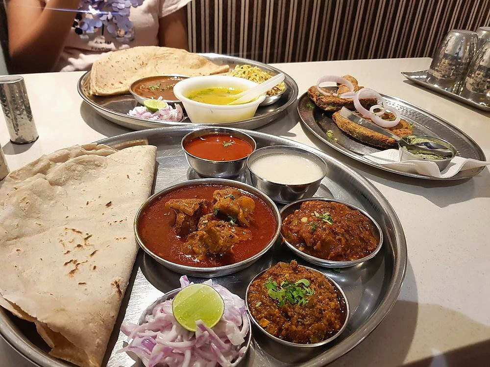

Allergens: none of the ten listed below
Ingredients
Quantities for 4.
- 700g on the bone Mutton
- 15 Dried Red ChilliKolhapuri lavangi if you can find them; this is meant to be hot
- 80g, dry roasted until dark Coconut
- 3, two roasted dark and one sliced Onion
- 10 cloves Garlic
- 2 tbsp Ginger
- 2 tbsp Coriander Powderwhole seeds dry roasted and ground are better if you have them
- 1 tbsp Cumin Seeds
- 1 tsp Black Pepper
- 1/2 tsp Turmeric
- 6 tbsp Neutral Oil
- a handful Coriander Leaves
- to taste Salt
Cookware
stovetop, pressure cooker, blender
Checked against the ingredient list for ten allergens: milk, egg, fish, crustaceans, tree nuts, peanuts, sesame, mustard, soy and gluten. Brands vary, so read the label on anything new to you.
Before you start
- Tambda means red. It is served with pandhra rassa, the white coconut broth, and the pair is the point of a Kolhapuri meal.
- The rassa is thin, drunk from a bowl alongside the meat. Do not reduce it into a curry.
Method
- Dry roast the coconut, coriander powder, cumin, black pepper and chillies separately until each darkens and smells toasted.Separately. They brown at different speeds and a burnt chilli ruins the pot.
- Grind them with the roasted onion, garlic and ginger into a smooth dark paste with a little water.
- Boil the mutton with turmeric, salt and 1.2 litres water until tender, about 45 minutes. Keep the stock.
- Fry the sliced onion in the oil until brown, add the ground paste and fry until the oil separates, 8 minutes.
- Add the mutton and its stock, bring to a boil and simmer 15 minutes.
- Skim the red oil that rises and spoon it back over each serving. Finish with coriander.That floating red oil is the signature. Do not skim it away.
Safe temperatures: Whole cuts of mutton, beef and pork are done at 63°C / 145°F, rested 3 minutes. A long braise passes that well before the meat is tender. Reheat leftovers to 74°C / 165°F. FoodSafety.gov
Storage
Keeps 3 days refrigerated and improves overnight. Freezes well for a month. Reheat to a full boil.
Nutrition Medium estimate
High protein: 39 g a serving, 30% of the calories
| Per serving321 g | Per 100 g | |
|---|---|---|
| Calories | 518 kcal | 162 kcal |
| Protein | 39.4 g | 12 g |
| Carbohydrate | 18.6 g | 6 g |
| of which sugars | 5.1 g | 2 g |
| Fibre | 5.4 g | 2 g |
| Fat | 32.7 g | 10 g |
| of which saturated | 9.4 g | 3 g |
| of which unsaturated | 21.0 g | 7 g |
Ingredients given to taste count as zero, so the real figures run a little higher. Nearest database match used for mutton. Estimated from raw ingredients using USDA FoodData Central.
More like this: Gluten-free Indian recipes · Dairy-free Indian recipes · Maharashtrian recipes
Times, yields, allergens and nutrition are guidance. Use your own judgement on doneness and on storing. More in About.